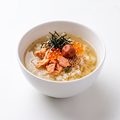

DishReveal
DishReveal helps you understand and recreate dishes from a single food photo using AI.
Simply choose or take a photo of a prepared dish and let AI analyze what it sees. You can explore the likely dish name, ingredients, estimated amounts, calories, possible allergens, and step-by-step cooking guidance.
DishReveal is designed for moments when you see a dish and wonder, “What is in this?” or “How could I make something like this at home?”
Save analyzed dishes to your personal history, organize them with favorites, statuses, categories, tags, and memos, and create your own personalized recipes based on the AI-generated result.
Features
- Analyze a prepared dish from a single photo
- Identify the likely dish name
- Discover likely visible ingredients
- See estimated ingredient amounts
- Explore possible hidden or common ingredients
- View estimated calories and calorie ranges
- Review possible allergens with explanations
- Get step-by-step cooking guidance
- Save analyzed dishes to your history
- Mark dishes as favorites
- Set cooking statuses such as Want to Cook, Cooked, or Cook Again
- Automatically organize dishes by category
- Add your own tags and memos
- Search saved dishes by name, ingredient, category, tag, and more
- Filter and sort your dish collection
- Create multiple personalized My Recipes for a dish
- Edit your own recipe names, ingredients, amounts, and cooking steps
- Copy individual analysis sections
- Share dish information using the iOS share sheet
- Purchase only the credits you need
- No subscription required
Frequently Asked Questions
-
Q: What does this app do?
A: DishReveal uses AI to analyze a photo of a prepared dish and provide a likely dish name, ingredients, estimated amounts, calories, possible allergens, and step-by-step guidance for recreating the dish.
-
Q: How do I use the app?
A: Choose or take a photo of a prepared dish, then start the analysis. Once processing is complete, you can review the results and save the dish to your history.
-
Q: What kind of food photo works best?
A: Clear, well-lit photos where the dish and its main ingredients are visible generally produce the best results. Try to avoid heavily blurred, very dark, or partially obscured images.
-
Q: Can the app identify every ingredient in a dish?
A: No. AI can estimate ingredients based on what is visible and what is commonly used in similar dishes, but hidden ingredients, seasonings, sauces, oils, and preparation methods cannot always be determined from a photo.
-
Q: Are the ingredient amounts exact?
A: No. Ingredient amounts are estimates based on the appearance and likely composition of the dish. Actual recipes and portion sizes may differ.
-
Q: Are the calorie estimates exact?
A: No. Calories are estimated from the visible portion size and likely ingredients. Actual calorie content can vary significantly depending on ingredients, quantities, cooking methods, oils, sauces, and serving size.
-
Q: Can I use the allergen information to determine whether a dish is safe to eat?
A: No. Possible allergen information is provided only as an estimate. Hidden ingredients and cross-contact cannot be identified reliably from a photo. Do not rely on the app for medical or allergy-safety decisions.
-
Q: Does the app provide a recipe?
A: Yes. The AI provides step-by-step cooking guidance designed to help you recreate a dish similar to the one shown in the photo. The generated recipe is an estimate and may not match the original preparation exactly.
-
Q: What is My Recipe?
A: My Recipe lets you create and save your own version of an analyzed dish. You can give it a name and customize the ingredients, amounts, and cooking steps.
-
Q: Can I save more than one personal recipe for the same dish?
A: Yes. You can save multiple My Recipes for a single dish, such as a milder version, a family version, or your own preferred variation.
-
Q: Can I organize the dishes I save?
A: Yes. Saved dishes can be organized using favorites, cooking status, automatic categories, custom tags, and memos.
-
Q: Can I search my saved dishes?
A: Yes. You can search your history by dish name, ingredients, tags, and other saved information. You can also use filters to narrow your collection by favorites, status, category, tags, and ingredients.
-
Q: How do credits work?
A: Each successful food analysis uses one credit. Additional credits can be purchased whenever you need them.
-
Q: Is there a subscription?
A: No. DishReveal uses a credit-based system with no recurring subscription.
-
Q: Does the app require an internet connection?
A: Yes. An internet connection is required because food image analysis is performed using remote AI services.
-
Q: Are my food photos stored permanently?
A: Photos are sent for the purpose of performing the requested AI analysis. DishReveal stores the dish photo locally when you save an analyzed dish to your history.
-
Q: Can I copy or share the analysis?
A: Yes. You can copy individual sections such as ingredients, calories, or cooking steps, and share dish information using the iOS share sheet.
-
Q: Can the app recreate the exact restaurant recipe?
A: No. The app creates an estimate based on the appearance of the dish and typical preparation methods. Exact recipes, proprietary ingredients, hidden seasonings, and cooking techniques cannot be determined from a photo alone.
Important Disclaimer
Ingredients, allergens, calories, portion sizes, and recipes are estimates generated from the image. Hidden ingredients, exact quantities, preparation methods, and cross-contact cannot be determined reliably from a photo. Do not use the app as a substitute for professional medical, nutritional, or allergy-safety advice.
📩 Contact
If you have any questions or encounter issues, feel free to contact us:
← Back to Support Center